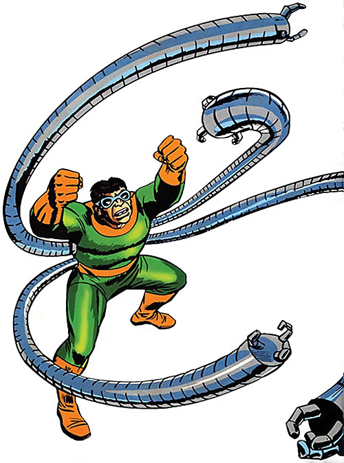

Doctor Octopus

Origins
Doctor Octopus (Doc Ock) first appearance was in Amazing Spider-Man issue #3, in which Doctor Otto Octavius attaches 4 mechanical arms to himself to become the criminal known as Doctor Octopus. These arms are controlled by his mind, and eventually in later comics are even able to be used from long distances. These arms prove to be a formidable foe for Spider-Man as in their first encounter Doc Ock is actually the one to win, making Peter actually quit being Spider-Man for a week due to being scared about being beaten again. Eventually Peter goes back and beats Doc Ock, however he has come back many times in many issues as a foe. Doc Ock has done many formidable things such as rule an underworld army against the Kingpin under the guise of 'Master Planner', attempt to marry Peter Parker's Aunt May, and even taking over Peter Parker's body to become a villain with Spider-Man's powers, although that is short lived due to him having Peter's memories, and seeing his struggle, and promising to do good and become the "Surperior Spider-Man"
Different versions of Doctor Octopus
Different variations include:
- Doctor Otto Octavius - Earth 616
- Alfred Molina's - Otto Octavius in the Sam Raimi Movies
- Otto Octavius - Ultimate Universe
- Olivia Octavius - Doc Ock, Into the Spider-Verse